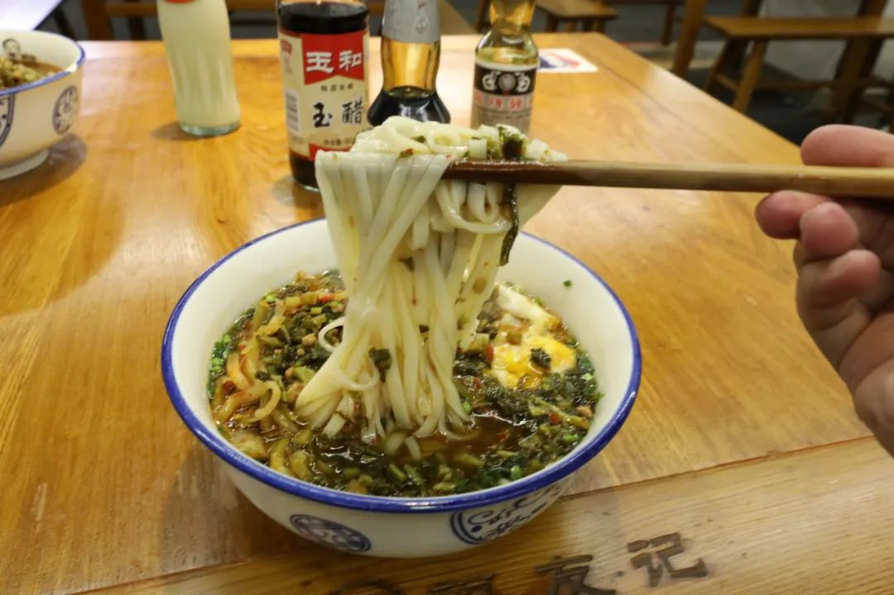
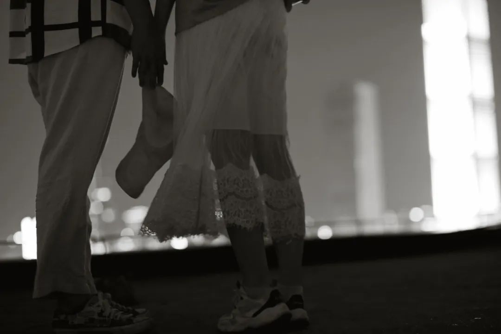
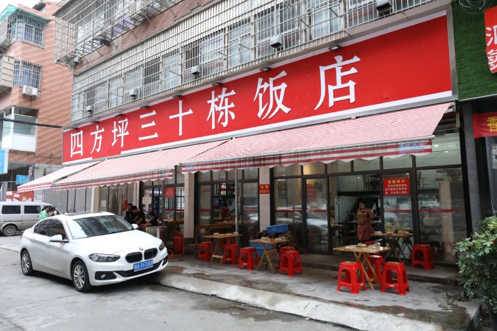
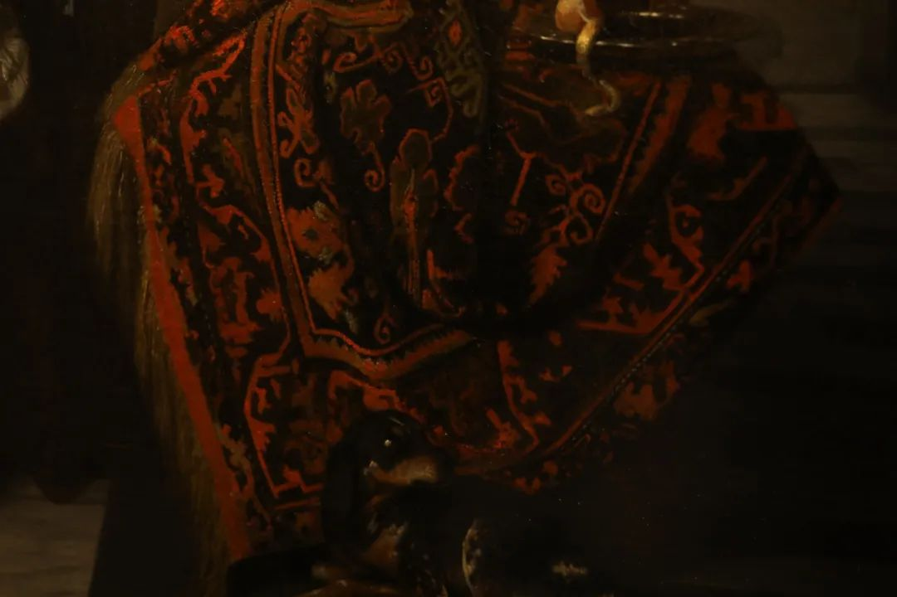

你大可以不把这当早餐店，也不会有人只把这当作早餐店。粉面横跨三餐和夜宵，赢者即可通吃。

當今的工人一輩子天天做著同樣的活計，其命運不失為荒誕。但他只有在意識到荒誕的極少時刻，命運才是悲壯的。




韭菜园的老板说长沙只有不到十家店和自己有关系，其余一百多家都是冒牌货。但如果两个盒子，分别装韭菜园的万家丽的盗版店，去除标签。即便加个参比才来分辨，我也不会觉得有什么区别。都是好吃，是那种不带偏见的正常好吃。
裕南街不愧是我心目中长沙最好吃的街道。当我跋山涉水玩到长坡街道附近，老板看着这么远也不容易，但是店里只有最后五颗馄饨了，于是又搭了半碗荷兰粉。
店家已经吃起了自己这边的私房菜，街坊邻里经过的时候会笑“诶你们屋里又搞了莫子好菜”并且真的拼桌坐下来拿起筷子吃。我也夹了一点过来和这碗馄饨remix荷兰粉一起。大概也只有在最市井烟火的地方，才会遇到这样的事。
长沙生活就是这样。吃累了，就找地方去散散步 消消食
拍一拍家里没有过年于是在端午补上。粽子和肘子的同台



上周有一篇写毕业的。文字我已经写好了，图也找好了。之所以没有发，我说是懒得排版。于是开心地像是翘课、翘班一样跑出去玩。
关键是不知道怎么写。大一的，基本上是文、还有那种一看就迷醉nostalgic一类的表情包；大二上的时候稍微出现一些能看的图了，文也有一点。大二下开始的，看了看还不如直接用当年的100图来代替。难道就直接从当年的100图复制过来吗，那也太粗暴了一点吧我自己都看不下去，单独写文的话又一点动力也没有。和参与了四年偶尔在线下、常驻网络隔壁的好邻居 一起看完了许久的照片之后，更加觉得没什么好在2018年和2019年再补充的。可能这就是，那种把生活越过越粗浅。有些记忆一旦在某一次全局梳理的时候弃去，再次捡起的难度几乎几倍于再次经过那段记忆时期。到了今年，有了相机之后甚至都不怎么在自己的推文中出现表情包。虽然手机里有很多，但也不会一定为了经营一个公众号而发出来。更多的都像现在一样，作为无端开心的一个具备可解释性的来源。敢信从上次发推文到这一次，中间竟然拍了三四千张照片。
无法预料的生活就像是天气。可以躲避，但是逃了很远或者有不少的护具，但还是要面对
不喜欢那种所有人都包裹在一个巨大的特权泡泡里，所有人都老实巴交地向同一个方向踏步前进
如果我是研究城居规划和社会学的人，那我会想这个城市为什么在这个地方就会形成相亲角，人们自发、和那些社会群体形成的这个传统。但不管我再怎么感受到断面下可以挖掘的意义，我也没有精力也不被允许在这个方向里又做怎样的深耕。只能勾一个少量细节支撑的脑内剧场，排演只存在思想当中的作品

Ta是一条金鱼，知道自己所处的鱼缸有多大。虽然从没有人教过，但反正就是知道